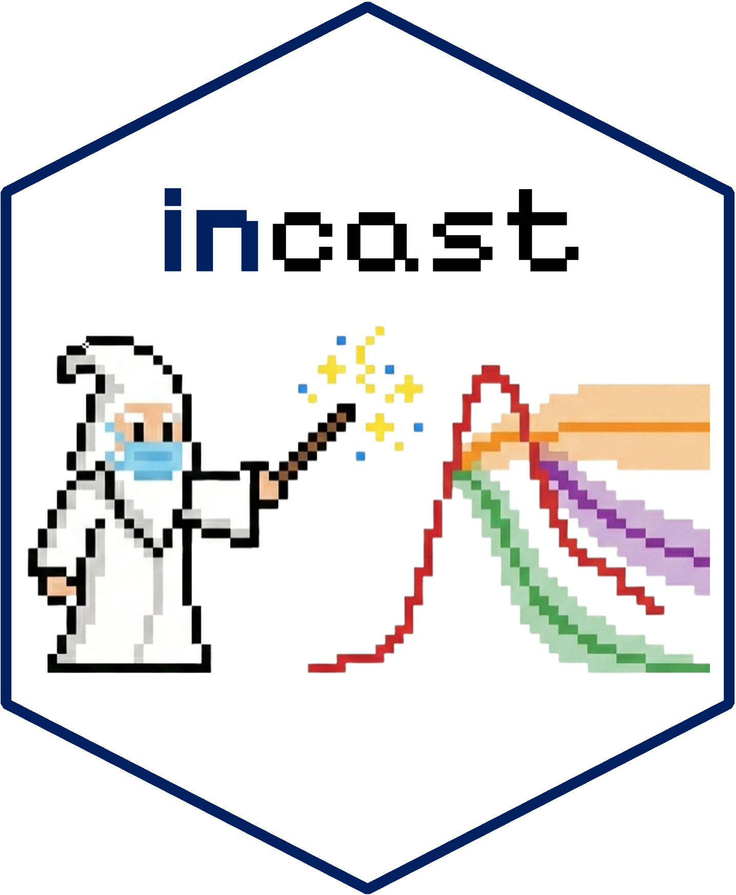

Disease Forecast Planning for Public Health
Source:vignettes/forecast_planning.Rmd
forecast_planning.RmdIntroduction
Disease forecasting is an important tool for public health, however, to maximize the utility of these tools, thoughtful planning is required to clearly define the approach to the problem needing to be addressed. While the ACCIDDA Forecast Suite provides a comprehensive toolkit for building infectious disease forecasting pipelines and hubs, discussions and planning prior to starting your forecasting project is important. We provide a series of questions to consider addressing below prior to using this package. This package and suite are still under active development, and we welcome contributions and feedback from the community.
Step 1: Why are we interested in forecasting?
First, there needs to be a clearly defined project to get started. Here are a set of questions to consider to begin this process:
-
What is the question that you are attempting to answer? Or what insights do you hope to gain?
- Determine what it is you are trying to gain from the forecasting project. Being specific here will be useful in determining your approach.
-
Who is the audience or who will benefit from the insights?
- Documenting who will use the forecasts and how will assist in the interpretation of the forecasting output.
-
How far into the future are you interested in forecasting? How far into the future do these insights need to be to be useful? What aspects of a forecast need to be accurate?
Clearly defining what you think is going to be useful information will determine how to approach the problems and if forecasting is the best tool.
For example, seasonal influenza forecasting typically involves predictions 1 to 4 weeks into the future. Forecasts provide a range of possible trajectories for that time period. Predicting a specific number, such as the number of total hospitalizations during that time period would require a different approach and models.
Answer prior to proceeding:
Have you defined your forecasting project and approach?
YES → Proceed to next steps
NO → Continue defining the approach
Step 2: Define Your Data
Next, defining what pathogen, the target (time series data), the geographical area, and the time resolution in order to know what data is required for the forecasting project.
- What pathogen(s) are you interested in?
While straight-forward and possibly answered in the step above, ensuring you are clear on which pathogen (e.g., influenza, COVID-19, RSV, etc) is being forecasted is important.
What outcomes do you measure for this pathogen?
Which of these outcomes is most relevant to the questions, insights, and your audience?
-
These outcomes are also referred to as the target. More importantly, how timely is this target reported?
- Is the timing of the target adequate enough for updating forecasts and evaluation?
Determining what is specifically being forecasted will important in the data collection steps.
Some examples of forecasting targets:
- Reported cases of influenza
- COVID-19 Hospitalizations
- Respiratory disease deaths
- Emergency Department (ED) visits related to respiratory disease-like illnesses- What spatial unit will provide the best insight? Are these data available at that scale?
This may include, but are not limited to:
- State, county, city, health jurisdiction, hospital system, or even facility (e.g., hospital)- What time resolution is adaquate and available to provide the required information for the audience?
Planning the time steps is important for determining if your data is consistently and readily available for that resolution. Also, this will assist in thinking about the reporting delays or lag time for each of these time steps.
Some typical forecasting time steps include days, weeks, or even months.
Answer prior to proceeding:
Have you defined your pathogen, target, spatial unit, and time resolution?
YES → Proceed to next steps
NO → Continue defining these data elements
Step 3: Data Availability & Limitations
In this step, you will be asked a series of questions to direct you to become familiar with the available forecasting hubs being routinely provided for national and state level targets.
# Decision Tree Approach to Public Health Forecasting
┌───────────────────────────────────────┐
│ Did you choose state-level forecasts │
│ for a particular pathogen? │
└────────────────────┬──────────────────┘
│
┌───────────────────────┐
▼ ▼
┌───────────────┐ ┌───────────────┐
│ Yes │ │ No │
└───────┬───────┘ └───────┬───────┘
│ │
▼ ▼
┌────────────────────────────────────┐ ┌────────────────────────────────────┐
│ Review available forecasting hubs │ │ Is data available for the target, │
│ providing state-level forecast. │ ┌──────│ spatial unit, and time resolution │
└─────────────────┬──────────────────┘ │ │ you have chosen? │
│ │ │ (e.g., weekly flu hosp in NC) │
│ │ └──────────────────┬─────────────────┘
▼ │ │
┌───────────────────────────────┐ │ ┌───────────────────┐
│ Did you find the state-level │ │ ▼ ▼
│ forecasting information you │ │ ┌───────┐ ┌───────┐
│ were originally seeking? │ │ │ YES │ │ NO │
└───────────────┬───────────────┘ │ └───────┘ └───────┘
│ │ │ │
│ │ │ │
┌───────────────────┐ │ │ │
▼ ▼ │ │ │
┌───────────────────┐ ┌─────────┐ │ │ │
│ YES → Fantastic! │ │ NO → │──────┘ │ │
└───────────────────┘ └────┬────┘ │ │
│ │
▼ ▼
┌──────────────────────────────┐ ┌─────────────────────────────┐
│ Is historical data available │ │ Does the data exist, but │
│ for the target of interest? │ │ are not easily accessible? │
└──────────────┬───────────────┘ └─────────────┬───────────────┘
│ │
┌─────────────────────────────────┐ ┌─────────────────────────────┐
▼ ▼ ▼ ▼
┌──────────────────────┐ ┌───────────────────────────┐ ┌────────────────────┐ ┌───────────────────────────┐
│ YES → │ │ NO → │ │ YES → │ │ NO → │
│ [Collect and store │ │ Go back to Step 1. │ │ [Collect any │ │ Go back to Step 1. │
│ the available data] │ │ Re-evaluate the project. │ │ available data] │ │ Re-evaluate the project. │
└──────────┬───────────┘ └───────────────────────────┘ └──────────┬─────────┘ └───────────────────────────┘
│ │
│ │
└───────────────────────────────┬───────────────────────────────┘
│
│
┌──────────────────────────────────────────────────────────────┐
│ Are these data reported or available in a consistent manner? │────────────────┐
│ (e.g., same data is available every week on the same day) │ │
└──────────────────────────────┬───────────────────────────────┘ │
│ │
┌────────────────────────────────────────────────────────┐ │
│ │ │
│ │ │
▼ ▼ │
┌──────────────────────────┐ ┌──────────────────────────┐ │
│ YES → │ │ NO → │ │
│ Establish a reporting │ │ Determine the reporting │─────┘
│ timeline consistnet with │ │ timeline and look for │
│ resolution. │ │ consistencies. │
└─────────────┬────────────┘ └──────────────────────────┘
│
▼
┌──────────────────────────────────────────────────────┐
│ Setup consistent downloads of the entire dataset │
│ (not just the ci=urrent week - e.g., versioned data) │
└──────────────────────┬───────────────────────────────┘
│
│
┌─────────────────────────────────────────┐ ┌────────────────────────┐
│ Does your data have reporting delays │────────────────│ YES → │
│ and completeness issues? │ │ (Plan for Nowcasting) │
└─────────────────────────────────────────┘ └────────────────────────┘National and State Level Forecasting Hubs: FluSight guide MetroCast website for more information on creating a GitHub personal access token (PAT).
A full list of real-time collaborative public health hubs can be found here.